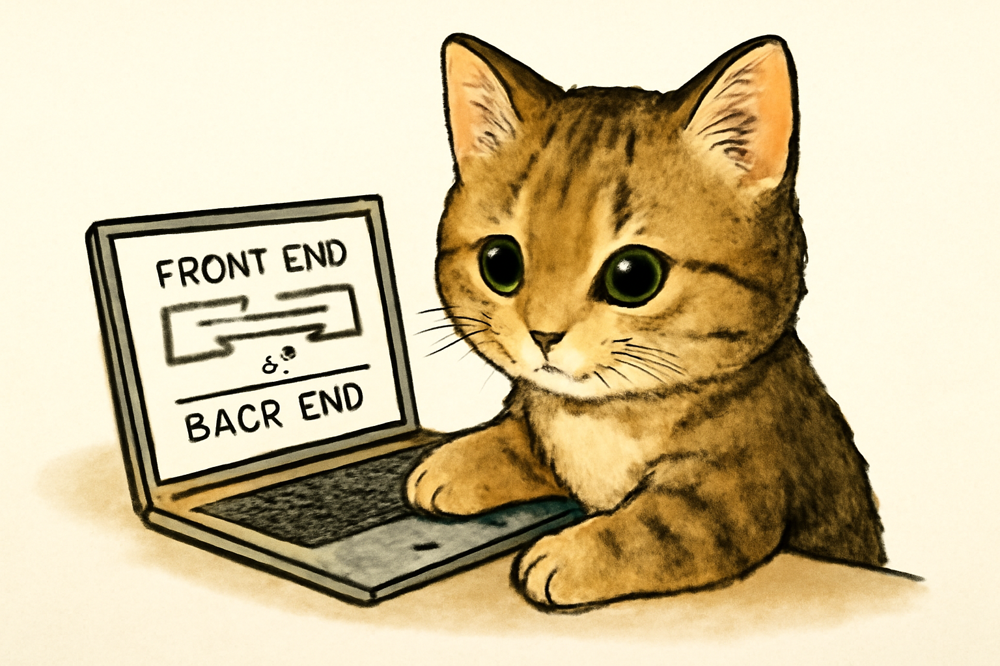

Хто такий Full Stack Developer?
Full Stack Developer (розробник повного циклу) — це спеціаліст, який вміє працювати як з тією частиною програми, яку бачить користувач (Front End), так і з внутрішньою частиною, яка працює «за лаштунками» (Back End).
Front End (зовнішня частина)
Це те, що ми бачимо на сайті чи в додатку — кнопки, пошуковий рядок, зображення, меню тощо. Наприклад, якщо ти заходиш у Google, пошуковий рядок і кнопки — це частина Front End.
Back End (внутрішня частина)
Це те, що працює за кулісами. Наприклад, коли ти натискаєш на кнопку пошуку в Google, система обробляє твій запит і знаходить потрібну інформацію. Це робить саме Back End.
Веб-розробники, які займаються обома цими частинами, називаються Full Stack Developers.
Чим займається Full Stack Developer?
- Робота з CMS (системи управління контентом).
- Налагодження вже існуючих сайтів чи додатків або створення нових.
- Співпраця з дизайнерами та командою маркетингу для покращення дизайну та функціональності.
- Налаштування API — це спеціальні інтерфейси для взаємодії між різними частинами системи.
- Full Stack Developer часто «гасить пожежі» на різних етапах проєкту, вирішуючи проблеми на Front End чи Back End.
Які навички потрібні Full Stack Developer?
Hard Skills (технічні навички)
- Git та GitHub — для роботи в команді.
- Основи HTML та CSS — для створення сайту.
- JavaScript — для створення функціональних елементів на сайті.
- Основи роботи з серверами та базами даних (Back End).
- Основи тестування коду, щоб він працював правильно.
Soft Skills (м’які навички)
- Уміння працювати в команді — важливо взаємодіяти з дизайнерами та маркетологами.
- Творчість — допомагає робити проєкти не тільки корисними, а й цікавими для користувачів.
- Увага до деталей — важливо, щоб усе працювало правильно.
- Терпіння — створення проєкту займає час.
- Гарний тайм-менеджмент — щоб все встигнути та не втомитися.
Тепер ти знаєш, що робить Full Stack Developer і які навички йому потрібні. Ці знання будуть корисні для твоїх перших кроків у веб-розробці!